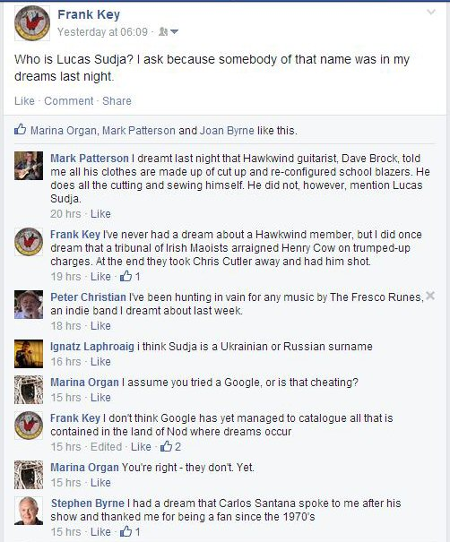

Sunday, July the 27th, 2014
back to: title, date or indexes
A couple of nights ago I had a dream in which the protagonist was Lucas Sudja. I had—and have—absolutely no idea who Mr Sudja is, or was, and so, with my finger pressed firmly on the 21st century vacuum o' vapidity—sorry, I mean zeitgeist—I took to Facecloth to find out.

I was amused by those replies where my respondents shared their own dreams, but more pertinent to this post was Marina Organ's question whether I had Googled Lucas Sudja, and my reply. It was only when the question was put to me that I thought about the possibility of GoogleNod—a vast archive cataloguing all that is contained, not in the “real” world, but in the world of dreams.
The content of GoogleNod would of course be utterly different to the stuff we find on its parent search engine. Utterly different, but somehow, tangentially, familiar. Lucas Sudja would be there, along with the tribunal of Henry Cow-baiting Irish Maoists, indie band The Fresco Runes, Dave Brock's handmade wardrobe, and a myriad of other shimmering phantasms from the Land of Nod.
GoogleNod would simply collect the material, certainly make no attempt to “interpret” it. That fool's errand can be left to the man Vladimir Nabokov called “the Viennese quack” and his increasingly preposterous acolytes. It matters not what Lucas Sudja portends. What matters—if any of it matters at all—is that he now exists, however faint and fugitive, because I dreamed him.